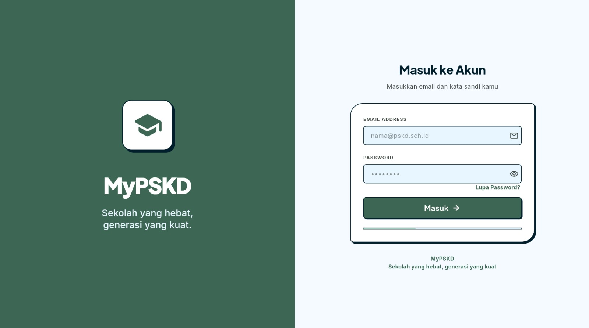

01 / 04

EDTECH / MULTI-PLATFORMCASE_001
MONDAY, 08:30 AMKeep learning.
Keep growing.
Keep growing.
COURSES04
PROGRESS76%
MATHEMATICSIntroduction to Algebra
↗SCIENCEExploring Our World
↗⌂▦◷◎
MOBILE / MVP
MyPSKD↗
Making school workflows feel more connected.
BEST PROJECT IN COHORTSoftware Development · MyPSKD
An MVP learning management system built around the needs of administrators, teachers, and students. The project explores how mobile experiences and backend services can support everyday learning workflows.
FlutterDartNode.jsExpressFirebase